- 終了まであと10日
 大宅 誠人
大宅 誠人
大宅 誠人今までに学習したことを使い、アプリケーションを開発できるようになる。
基本的に全て課題形式になっているので、ヒントや過去の学習を参考にして進めてみてください。
詰まったら模範解答と照らしあわせて少しずつ理解していきましょう。
トップページでは、スクレイピングで追加した作品を、追加された順に20件表示します。
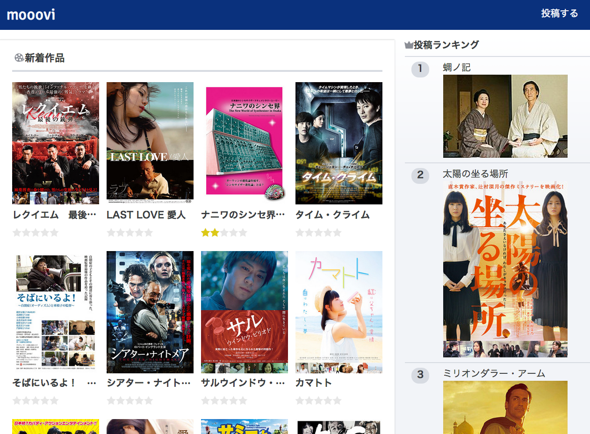
最新順にデータを取得するにはどうしたらいいでしょうか。
ActiveRecordには順番を指定するorderメソッド、取得する件数を指定するlimitメソッドがあります。
orderメソッドは、データベースからデータ取得時にデータをどう並び替えるかというのが指定できます。
例えば、「id順に並べたいとき」や「作成日順に並べたい」ときに使います。
引数には並び替える基準のカラムと、DESC(降順)かASC(昇順)のどちらかの2つを指定することにより順番を指定して取得することができます。
1 |
モデル名.order('カラム名 順序')
|
実行例
| 実行例 | 詳細 |
|---|---|
| User.order('id DESC') | idを降順でユーザデータ取得 |
| User.order('id ASC') | idを昇順でユーザデータ取得 |
limitメソッド はデータをいくつ取得するかというのが指定できるメソッドで、
引数には取得したい件数を指定します。
1 |
モデル名.limit(取得件数)
|
実行例
ユーザを10件取得する
1 |
User.limit(10)
|
以下のようにトップページに作品が表示されるようになったでしょうか。
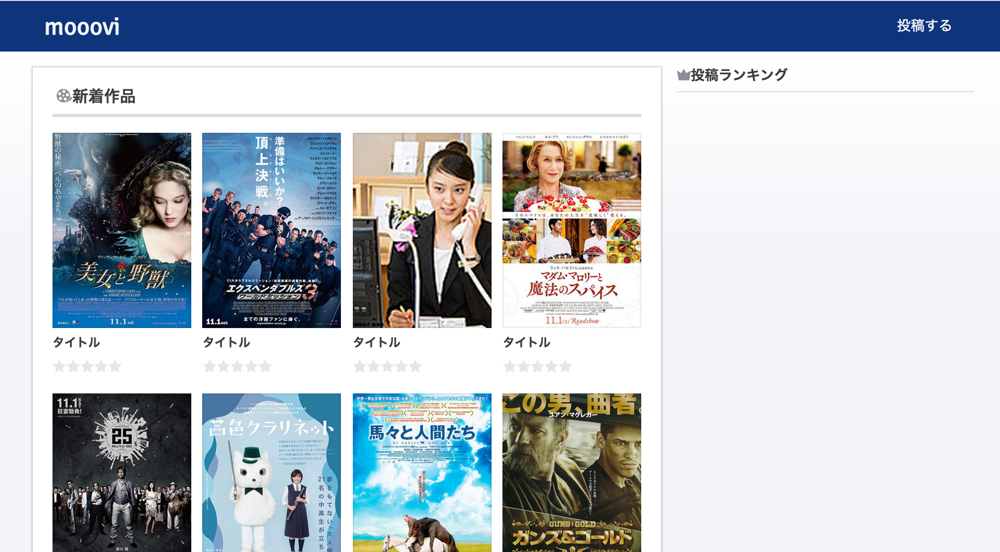
画像は作品それぞれの画像になっていますが、作品タイトルがすべて「タイトル」になっています。このままでは作品タイトルがわからないので現在、「タイトル」となっているところをそれぞれの作品名にしましょう。
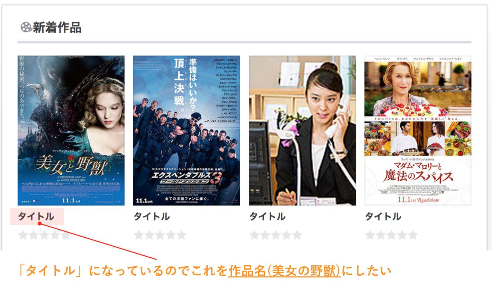
この作品のビューはRailsアプリケーションのディレクトリのどこにあるでしょうか。
コントローラーはproducts_controllerなので「mooovi」>「app」>「views」>「products」のフォルダの中にビューのファイルが入っています。
productsフォルダの中にはビューのファイルが2つ入ってます。この中でトップの作品一覧を表示しているビューはindex.html.erbです。
ではこのファイルを編集して「タイトル」の部分にそれぞれの作品の作品名を表示させるようにしましょう。
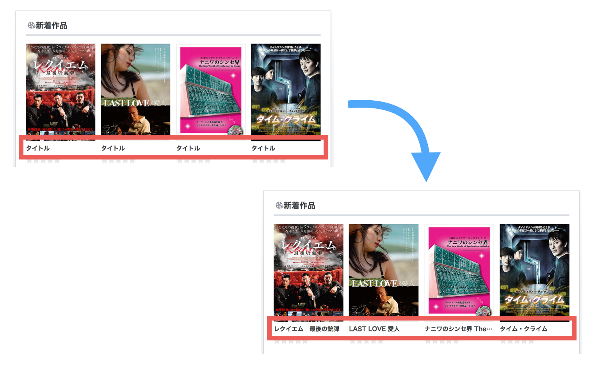
以下のように作品ごとに作品タイトルが表示されるようになったでしょうか。

トップページの作品をクリックしたら、作品ページへリンクします。
作品ページは以下のようなページです。
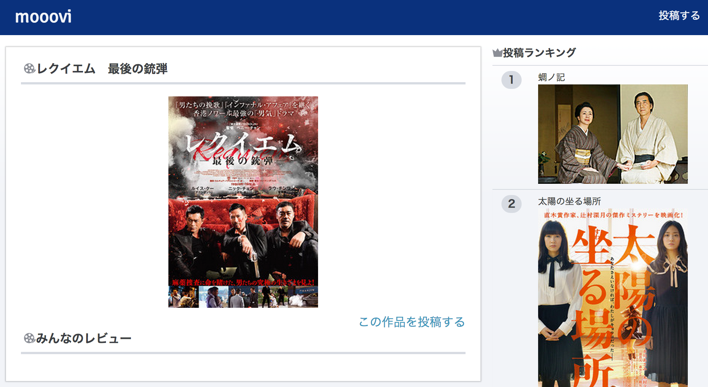
まずは、コントローラーから編集していきましょう。
作品ページを扱うアクションで作品のidを受け取り、そのidにあたる作品情報をデータベースから１件取得します。
idに当たる作品情報を１件取得するメソッドが、findメソッドです。
findメソッドは引数に指定したidにあたる作品情報を1件だけ取得します。
もし、そのidにあたる作品が存在しない場合、エラーが発生します。
idが5のユーザを取得する
1 2 3 4 |
User.find(5)
# idが5のUserモデルのインスタンスが取得
# or
# idが5のUserモデルのインスタンスがない場合エラー
|
トップページの作品をクリックしたあと、作品ページに遷移します。その際、どんなHTTPリクエストが呼ばれているでしょうか。完成版のmoooviでトップページの作品をクリックしてそのURLを見てみましょう。
※Basic認証が掛かっています。
ユーザ名: tcamp
パスワード: master
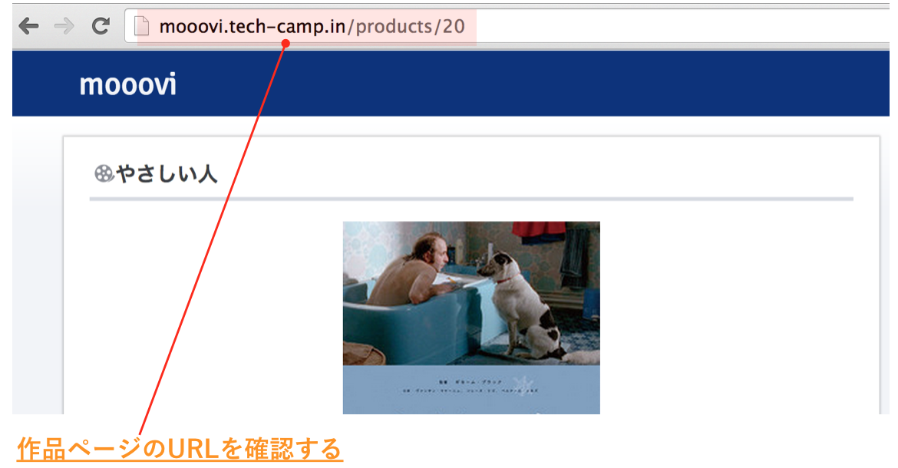
上の画像では作品ページのURLはmooovi.tech-camp.in/products/20となっています。mooovi.tech-camp.inの部分はサイトのホスト名なので大事なのはパスの「/products/20」です。では、このページを表示するアクションを調べるためにルーティングを見て行きましょう。
rake routesコマンドはそのアプリケーションでアクセスできるHTTPリクエストの一覧を見ることのできるコマンドです。このコマンドを使うとHTTPリクエストのメソッド(GET, POSTなど)とパス、それに対応するコントローラーとアクション名が確認できます。
1 2 3 4 |
$ cd ~/projects/mooovi
# 「mooovi」ディレクトリに移動
$ bundle exec rake routes
|
以下のようにターミナルに表示されたでしょうか。
1 2 3 4 |
Prefix Verb URI Pattern Controller#Action
search_products GET /products/search(.:format) products#search
product GET /products/:id(.:format) products#show
root GET / products#index
|
いろいろと情報が表示されていますが今のところは5行目の以下の文だけ見てみましょう。
5 |
product GET /products/:id(.:format) products#show
|
一番最初に表示されている「product」については今は気にしなくて大丈夫です。
GETとはHTTPリクエストの種類のことですね。
そのあとに続いて/products/:id(.:format)と表示されています。これは先ほどの作品ページのURLにあった「/products/20」と対応しています。
/products/:id(.:format)にある:idとは任意の作品idということです。上の例ではこの作品idは20でした。
1 2 |
/products/:id(.:format)
# :idは作品ページで表示される作品のidが該当する(例: 20)
|
ターミナルの一番右にはproducts#showと表示されています。これはproductsコントローラーのshowというアクションが呼ばれるという意味です。/products/:id(.:format)のURLにGETでHTTPリクエストが送られると呼ばれます。
1 2 |
products#show
# productsコントローラのshowアクションが呼ばれる
|
つまり、rake routesコマンドで表示された文は以下のような意味を持っています。このあたりの流れが不安な方は参考カリキュラムをご覧ください。
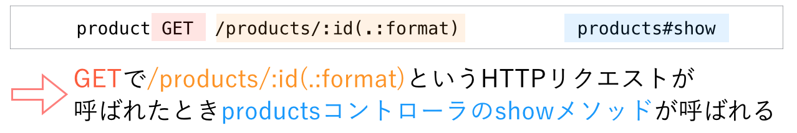
ではこのHTTPリクエストによって送られたidの取得方法を見ていきます。
HTTPリクエストが送られると、パス(/products/20)から作品idを取得することができます。
作品idはパラメータとして自動的にparamsというハッシュ型の変数に格納されコントローラーに送られます。またこの時キーは/products/:idのidになり、バリューはアクセスしたパスの:idの箇所に一致する数字になります。
/products/20にアクセスした場合paramsという変数は以下のようになります。
1 2 |
puts params
# { id: 20 }
|
そして、ハッシュから指定したキーのバリューを取得したい際は、以下のようにします。参考カリキュラム
1 2 |
puts params[:id]
# 20
|
これで作品ページが表示されるときにproductsコントローラーのshowアクションが呼び出されることがわかりました。ではshowアクションに作品ページで表示する作品情報を取得する処理を追加しましょう。
以下のように表示されれば成功です。
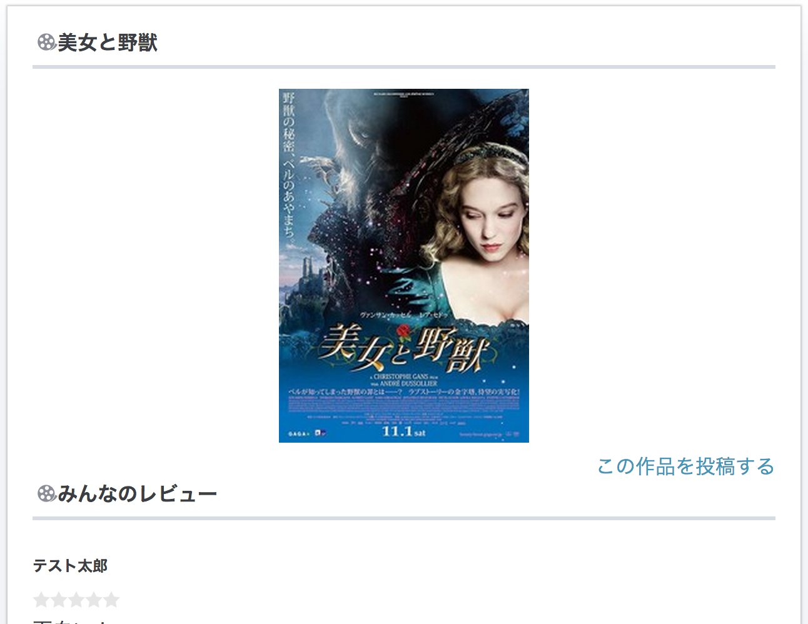
いよいよレビューを投稿する機能を作っていきましょう。この映画レビューサイトではまず、投稿したい作品を検索して選びます。作品名で検索できる検索機能を実装します。
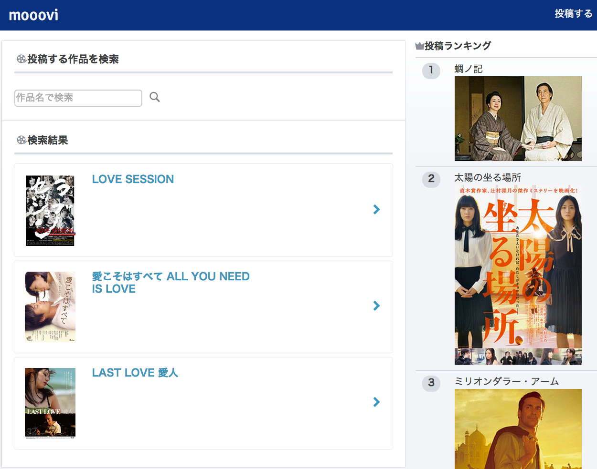
入力されたキーワードが作品タイトルに含まれている作品の検索をします。
作品タイトルにキーワードが含まれている作品を取得するにはLIKE句というものを使います。
LIKE句は、あいまいな文字列の検索をすることができるもので、whereメソッドと一緒に使います。
あいまいな文字列の検索とはどういうことか。
例えば、1文字目に'a'という文字列が入ったデータや最後の文字に'b'が入っているデータ、文字列の途中に'c'が入ったデータなどを検索したい時に、あいまい文字列というものを使って検索することです。
| 文字列 | 意味 |
|---|---|
| % | 任意の文字列(空白文字列含む) |
| _ | 任意の1文字 |
| 実行例 | 詳細 |
|---|---|
| where('title LIKE(?)', "a%") | aから始まるタイトル |
| where('title LIKE(?)', "%b") | bで終わるタイトル |
| where('title LIKE(?)', "%c%") | cが含まれるタイトル |
| where('title LIKE(?)', "d_") | dで始まる2文字のタイトル |
| where('title LIKE(?)', "_e") | eで終わる2文字のタイトル |
moooviの右上の投稿するボタンから投稿画面に移動して、実際に作品を検索してみましょう。
すると、検索キーワードが消えますが作品は表示されません。まだ検索機能を実装していないので当然ですね。検索したあとのURLを見てみてください。
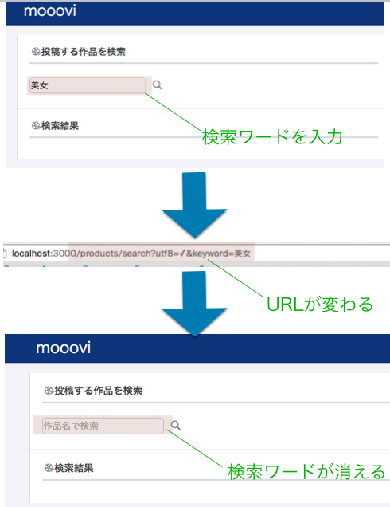
URLが変わりましたね。/products/search?utf8=✓&keyword=美女になっています。ではrake routesコマンドでこのURLがどのコントローラーのアクションに対応しているか確認してみましょう。
1 |
$ bundle exec rake routes
|
1 2 3 4 |
Prefix Verb URI Pattern Controller#Action
search_products GET /products/search(.:format) products#search
product GET /products/:id(.:format) products#show
root GET / products#index
|
4行目の以下の部分の表示が/products/search?utf8=✓&keyword=に対応している文ですね。
4 |
search_products GET /products/search(.:format) products#search
|
これを見るとproductsコントローラーのsearchアクションが呼ばれていることがわかりました。
ではproductsコントローラーのsearchアクションに入力された検索キーワードであいまい検索をして、その結果を返す処理を追加しましょう。
これでレビューを投稿する準備が整いました。
続いて、以下のようなレビュー投稿画面をつくるためにReviewモデルとapp/views/reviews/new.html.erbに入力フォームを作成していきます。
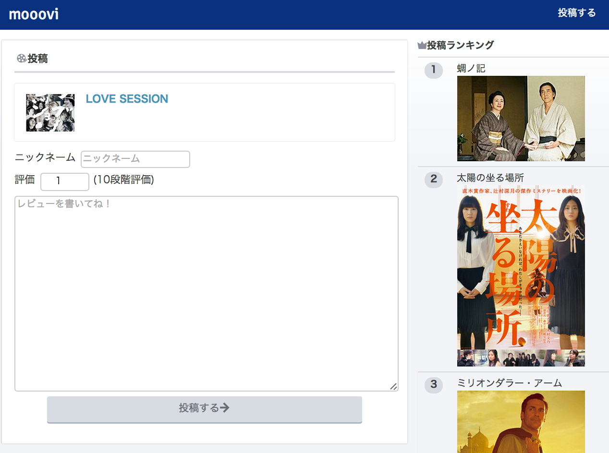
現段階では投稿画面に遷移してもReviewモデルがないためにエラー画面が表示されてしまいます。
まずはレビューのモデルを生成しましょう。モデル名はReviewにします。必要なカラムはなんでしょうか。レビューの投稿画面を見てみましょう。mooovi投稿画面
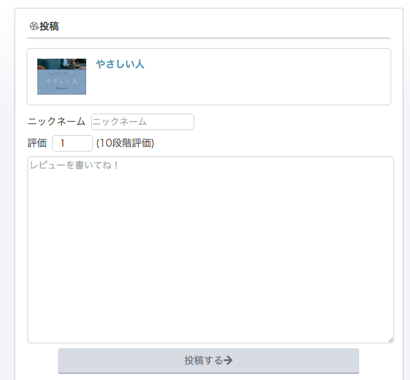
この画面から必要なカラムを考えてみましょう。入力する箇所はニックネームと評価(10段階評価)とレビューの内容ですね。この他に必要な情報はどの映画のレビューかという情報です。これらをカラムとして保存してみましょう。
| カラム名 | データ型 | 用途 |
|---|---|---|
| nickname | string | ニックネーム |
| rate | integer | 評価 |
| review | text | レビュー |
| product_id | integer | 作品id |
どの映画のレビューか、という情報はProductモデルのidがあれば十分です。よって作品idとしてproduct_idをカラムにします。
ではこのカラムを持ったモデルReviewを作成しましょう。
以上の問題ができたら、実際にreviewsテーブルが作成されているか確認してみましょう。
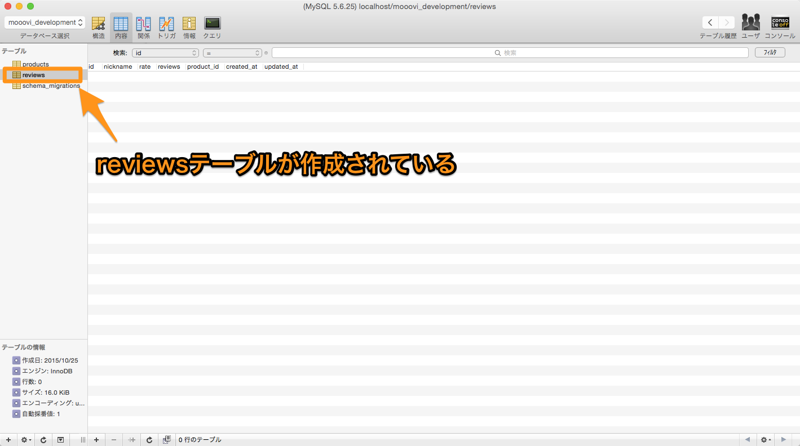
レビューを保存するテーブルができました。次はレビューを投稿するためのフォームを作っていきます。今回フォームに入力したデータは検索フォームと異なりReviewモデルのインスタンスとしてreviewsテーブルに保存します。その時はform_forヘルパーメソッドを使います。
また、ルーティングを簡単に作成するためにresourcesメソッドを使って定義します。さらに今回は、どのproductsに対するreviewなのかをパスから簡単に判別できるようにresourcesメソッドをネストさせます。
今、投稿画面にアクセスすると「Routing Error」が表示されます。これはまだ投稿画面のルーティングを設定していないためです。これからルーティングを設定していきます。
1 2 3 4 5 6 7 8 9 10 11 12 |
TechReviewSite::Application.routes.draw do
get 'products/:product_id/reviews/new' => 'reviews#new'
post 'products/:product_id/reviews' => 'reviews#create'
resources :products, only: :show do
collection do
get 'search'
end
end
root 'products#index'
end
|
これで投稿画面は表示されるようになりました。
ただこのように パス と アクション を自分で考えて定義していくのは冗長ですね。今回はresourcesというメソッドを使ってルーティングを生成していきます。
resourcesメソッドに対象となるリソース名(コントローラー名)を指定するだけで、Railsのリソースの7つのアクションで記載した7つのアクション名に対してのルーティングが自動的に設定されます。
【例】
1 2 |
Rails.application.routes.draw do
resources :books
|
ターミナルにて bundle exec rake routes コマンドを実行すると以下のように7つのルーティングが設定されているのが確認できます。
【例】
1 2 3 4 5 6 7 8 9 |
Prefix Verb URI Pattern Controller#Action
books GET /books(.:format) books#index
POST /books(.:format) books#create
new_book GET /books/new(.:format) books#new
edit_book GET /books/:id/edit(.:format) books#edit
book GET /books/:id(.:format) books#show
PATCH /books/:id(.:format) books#update
PUT /books/:id(.:format) books#update
DELETE /books/:id(.:format) books#destroy
|
またcontrollerでbefore_actionの編集をした時と同様に、resourcesメソッドでもexceptやonlyオプションを組み合わせて特定のアクションを指定することができます。
1 2 3 4 5 6 7 8 9 10 11 |
TechReviewSite::Application.routes.draw do
resources :reviews, only: [:new, :create]
resources :products, only: :show do
collection do
get 'search'
end
end
root 'products#index'
end
|
1 |
$ rake routes
|
1 2 3 4 5 6 |
Prefix Verb URI Pattern Controller#Action
reviews POST /reviews(.:format) reviews#create
new_review GET /reviews/new(.:format) reviews#new
search_products GET /products/search(.:format) products#search
product GET /products/:id(.:format) products#show
root GET / products#index
|
このようにresourcesメソッドを使えばRailsの規則に適ったルーティングを定義することができます。
ここで3行目に注目してください。/reviews/new はreviewの新規作成のページへのパスになります。
しかしこのままではどのproductに対するreviewなのかということを表す情報がありません。これはresourcesメソッドをネストさせる(入れ子構造にする)ことによって取得することが出来ます。
resourcesメソッドのネストは以下のように書きます。
【例】
1 2 3 |
resources :books do
resources :reviews
end
|
bundle exec rake routesコマンドを実行すると以下のように表示されます。
1 2 3 4 5 6 7 8 9 10 11 12 13 14 15 16 17 |
Prefix Verb URI Pattern Controller#Action
book_reviews GET /books/:book_id/reviews(.:format) reviews#index
POST /books/:book_id/reviews(.:format) reviews#create
new_book_review GET /books/:book_id/reviews/new(.:format) reviews#new
edit_book_review GET /books/:book_id/reviews/:id/edit(.:format) reviews#edit
book_review GET /books/:book_id/reviews/:id(.:format) reviews#show
PATCH /books/:book_id/reviews/:id(.:format) reviews#update
PUT /books/:book_id/reviews/:id(.:format) reviews#update
DELETE /books/:book_id/reviews/:id(.:format) reviews#destroy
books GET /books(.:format) books#index
POST /books(.:format) books#create
new_book GET /books/new(.:format) books#new
edit_book GET /books/:id/edit(.:format) books#edit
book GET /books/:id(.:format) books#show
PATCH /books/:id(.:format) books#update
PUT /books/:id(.:format) books#update
DELETE /books/:id(.:format) books#destroy
|
では、ルーティングを定義してきましょう。
1 2 3 4 5 6 7 8 9 10 |
TechReviewSite::Application.routes.draw do
resources :products, only: :show do
resources :reviews, only: [:new, :create]
collection do
get 'search'
end
end
root 'products#index'
end
|
4行目にあるcollection というのは、Rails7つのアクション以外のアクション名を定義する時に使います。
ここは少し発展的な内容なので、今は理解していなくても問題ありません。
1 2 3 4 5 6 |
Prefix Verb URI Pattern Controller#Action
product_reviews POST /products/:product_id/reviews(.:format) reviews#create
new_product_review GET /products/:product_id/reviews/new(.:format) reviews#new
search_products GET /products/search(.:format) products#search
product GET /products/:id(.:format) products#show
root GET / products#index
|
これでどのproductに対するreviewなのかということがパスから判断できるようになりました。
では最後にビューのフォームを編集していきます。
今回入力フォームから送られたデータはReviewモデルのインスタンスとしてreviewsテーブルに保存します。その時はform_forというヘルパーメソッドを使います。
form_forは、特定のモデルを編集・追加するためのフォームを生成するヘルパーメソッドです。
特定のテーブルにレコードだけを新規作成、更新するときに利用します。
1 2 3 |
<%= form_for(モデルクラスのインスタンス) do |f| %>
…
<% end %>
|
このようにあるモデルのインスタンスをform_forの引数にします。form_tagでは送信先のurlを直接引数に定義していました。
1 |
<%= form_tag('/products/search', method: :get) do %>
|
form_forは引数のインスタンスが何も情報を持っていなければ自動的にcreateアクションへ、すでに情報を持っている場合はupdateアクションへ自動的に振り分けてくれます。
次にform_for内でフォームを作るメソッドについて見てきます。
form_for内で使うメソッドは、f.htmlタグ名 :カラム名の形で指定します。
例えば、以下のヘルパーメソッドを見てください。
1 |
<%= f.text_field :name %>
|
こちらは、次のようなhtmlに変換されます。
1 |
<input id="モデル名_name" name="モデル名[name]" type="text" size="モデルで設定したsize">
|
form_for内におけるメソッドはformに使用するhtmlタグの数だけあります。
| メソッド | 用途 |
|---|---|
| f.label | labelのlabelタグを表示 |
| f.text_field | textのinputタグを表示 |
| f.date_select | モデルで設定したフィールドをselectタグで選べるようにして表示 |
| f.check_box | checkboxのinputタグを表示 |
| f.number_field | numberのinputタグを表示 |
| f.submit | submitのinputタグを表示 |
基本的にhtmlのformを知っていたら推測できるようなメソッドが用意されています。ここで全てのメソッドを覚えるのは大変なので、必要なときにrailsの公式ドキュメントを確認してください。
form_for と form_tag どちらを使うべきかは、基本的にモデルの有無で判断します。入力フォームで入力するデータのモデルがあれば form_for を使い、入力するデータが特にモデルを持っていなければ form_tag を使います。
今回は、レビュー投稿画面views/reviews/new.html.erbに常に新規作成されたReviewクラスのインスタンスを渡します。
フォームに入力された値は、投稿ボタンを押した瞬間にReviewクラスの新規インスタンスにそれぞれの属性の値としてセットされ、インスタンスはそのままreviewsテーブルに保存されます。
このような関係を簡単に実現してくれるのがform_for です。以下のコードをご覧ください。
【例】
1 2 3 4 5 6 7 8 9 10 11 12 13 14 15 |
<div class="row form">
<div class="col-lg-12">
<%= form_for current_user do |f| %>
<h2>登録情報</h2>
<div class="form-group">
<div class="col-lg-6">
<%= f.text_field :full_name, placeholder: "フルネーム", class: "form-control" %>
</div>
</div>
<div class="form-group">
<%= f.submit "送信", class: "btn btn-primary withripple" %>
</div>
<% end %>
</div>
</div>
|
eachメソッドやmapメソッドのように3行目で|変数| で変数を定義しており、さらに7行目と11行目でf. ~ としている部分で、属性値をセットしている様子が直感的にわかります。このように、「モデルの新規インスタンスに値を追加して保存」したい場合はform_for を利用します。
一方でRails2-3で実装した検索機能のように、「となりのトトロ」と入力すると、モデルを介さずにコントローラーにてproductsテーブルから該当する情報を引用し、結果をビューに表示しました。
1 2 3 4 5 6 7 8 9 10 11 12 13 14 15 16 17 18 19 20 21 22 23 24 25 26 27 28 29 30 31 32 33 34 35 36 37 38 39 40 41 42 43 44 45 46 47 48 49 50 51 52 53 54 55 56 57 58 59 |
<div id="main_cnt_wrapper">
<div id="yjContentsBody">
<div class="yjContainer">
<span class="yjGuid"><a id="yjContentsStart" name="yjContentsStart"></a><img alt="ここから本文です" height="1" src="http://i.yimg.jp/yui/jp/tmpl/1.1.0/audionav.gif" width="1"></span>
<div id="yjMain">
<article class="section">
<div class="container">
<header class="header header--section">
<h2 class="text-middle">
<i class="icon-movie color-gray-light"></i>投稿
</h2>
</header>
<div>
<ul class="listview js-lazy-load-images">
<li style="margin-bottom: 15px">
<a class="listview__element--right-icon" href="#">
<div class="box">
<div class="box__cell w80">
<div class="thumbnail thumbnail--photo">
<div class="thumbnail__figure" style="background-image: url(<%= @product.image_url %>);"></div>
</div>
</div>
<div class="box__cell pl1em">
<h3 class="text-middle text-break color-sub">
<%= @product.title %>
</h3>
<p class="text-xsmall">
</p>
<p class="text-xsmall opacity-60"></p>
</div>
</div>
</a>
</li>
</ul>
</div>
</div>
<%= form_for [@product, @review] do |f| %>
<div style="margin: 8px 0">
<%= f.label :nickname, style: { 'margin-right' => 8 } %>
<%= f.text_field :nickname, placeholder: 'nickname', value: '' %>
</div>
<div style="margin: 8px 0">
<%= f.label :評価, style: { 'margin-right' => 8 } %>
<%= f.number_field :rate, placeholder: '評価', value: 1, max: 10, min: 1, html: { class: "search__query", style: 'text-align: right;' } %>
</div>
<div style="margin: 8px 0">
<%= f.text_area :review, placeholder: 'レビューを書いてね！', style: 'width: 100%;height: 300px;' %>
</div>
<div class="row">
<div class="col10 push1">
<%= button_tag type: "submit", class: "btn btn--block" do %>
投稿する<i class="icon-arrow-right"></i>
<% end %>
</div>
</div>
<% end %>
</article>
</div>
<div id="yjSub">
|
37行目のform_forの引数が配列になっています。配列の１つ目の要素のインスタンスのidがパスの:product_idに入ります。今回はパスのネストが２段階なので、form_forの引数のインスタンスは２つです。つまり、resourcesメソッドを3回ネストさせた場合、form_forの引数のインスタンスは３つになります。
1 2 3 4 5 |
resources :users do
resources :products do
resources :reviews
end
end
|
1 2 3 4 5 |
def new
@user = User.find(4)
@product = Product.find(2)
@review = Review.new
end
|
1 2 3 |
<%= form_for ( [@user, @product, @review ] ) do |f| %>
（中略）
<% end %>
|
1 2 3 4 |
# HTTPメソッド
POST
# パス
/users/4/product/2/reviews
|
これで投稿画面が完成しました。
試しに、いまの段階でフォームに値を入力して投稿ボタンを押してみましょう。
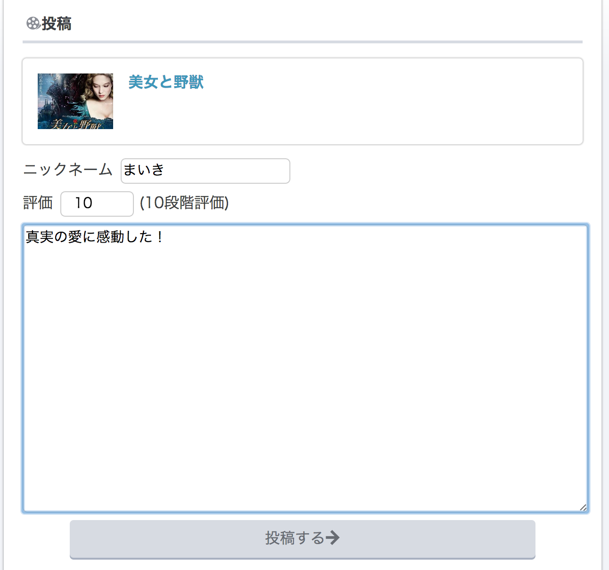
投稿ボタンを押すと以下のようなエラー画面になったと思います。
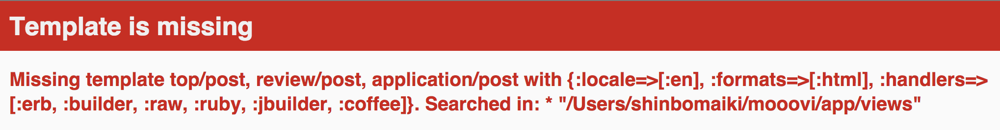
Template is missing となっていますね。RailsではHTTPリクエストを送ったあと、レスポンスとして ビュー を返します。
レビューの投稿では reviewsコントローラのcreateアクション が呼び出されます。
しかし、ディレクトリを見るとわかるようにreviewsコントローラーのビューの中にcreate.html.erbはありません。つまり、createアクションに対応したビューが存在しないということです。そのため「ビューがない」という意味で"Template is missing"というエラーになってしまったのです。
そこで、投稿されたらトップページへ遷移するようにしましょう。
このようにアクセスしたページとは違うページへ移動することをリダイレクトと言います。リダイレクトをする場合はアクションのビューが呼ばれません。そのため、ビューが無くてもエラーがでません。
本来アクセスしたページとは別のページへ移動することを言います。
railsではredirect_toというメソッドでリダイレクトさせることができ、actionオプションを使用することで特定のアクションを指定することができます。
1 |
redirect_to action: アクション名
|
という書き方ができます。
reviewsコントローラーのcreateアクションでフォームから送られてきた値を使ってReviewモデルを作成する処理を書きましょう。これでレビューが投稿できるようになります。form_forから送られてきたパラメーターはrequireメソッドを使ってデータを取得します。
form_forに入力されたデータはparamsの中に以下のような形でコントローラーに送られます。
1 2 3 4 |
<%= form_for(@book) do |f| %>
<%= f.text_field :name %>
<%= f.text_area :detail %>
<% end %>
|
1 2 |
params
# { book: { name: "入力された名前", detail: "入力された詳細" } }
|
キーはform_forの引数にあるインスタンスの モデル名(book) になり、バリューはカラム名と入力された値のハッシュです。
paramsからキーがbookのバリューを取得し、createアクションの引数に渡せるようにストロングパラメーターを定義するには以下のようにします。
1 2 3 4 |
params
# { book: { name: "入力された名前", detail: "入力された詳細" } }
params.require(:book)
# => { name: "入力された名前", detail: "入力された詳細" }
|
ここまで出来たら、実際に投稿してデータが保存されているか確認してみましょう。
まずはレビューを投稿しましょう。
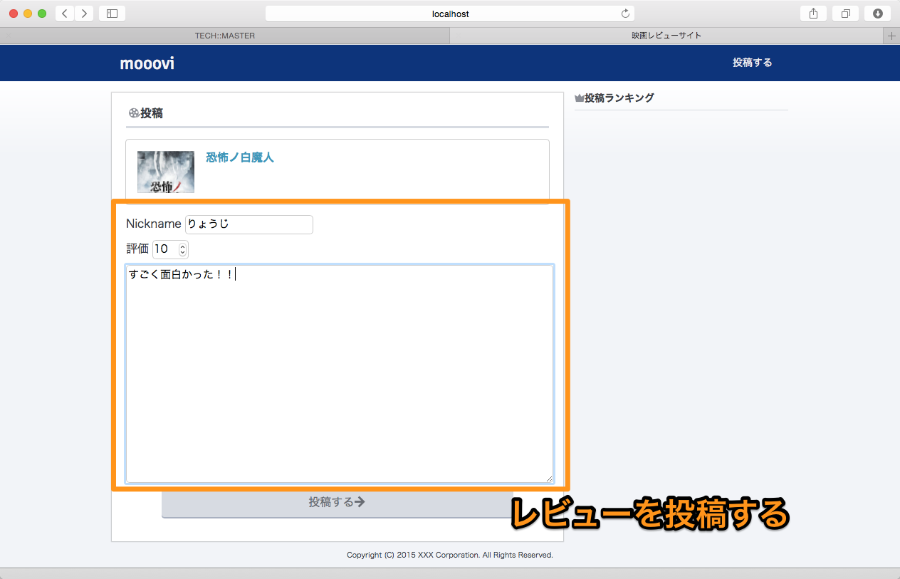
次に、reviewsテーブルに投稿した情報が保存されているか確認しましょう。
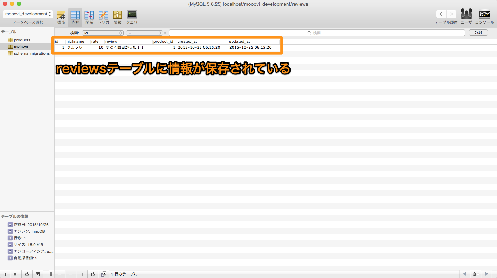
今までの実装でヘッダーの右の「投稿する」ボタンからはレビューを投稿できるようになりました。しかし、いちいち作品を検索して選ぶのは大変ですね。せっかくトップ画面に作品の一覧が並んでいるのでここで作品を選んでレビューを投稿したいです。そこで作品ページからレビューを投稿できるようにしましょう。
作品ページに移動してください。
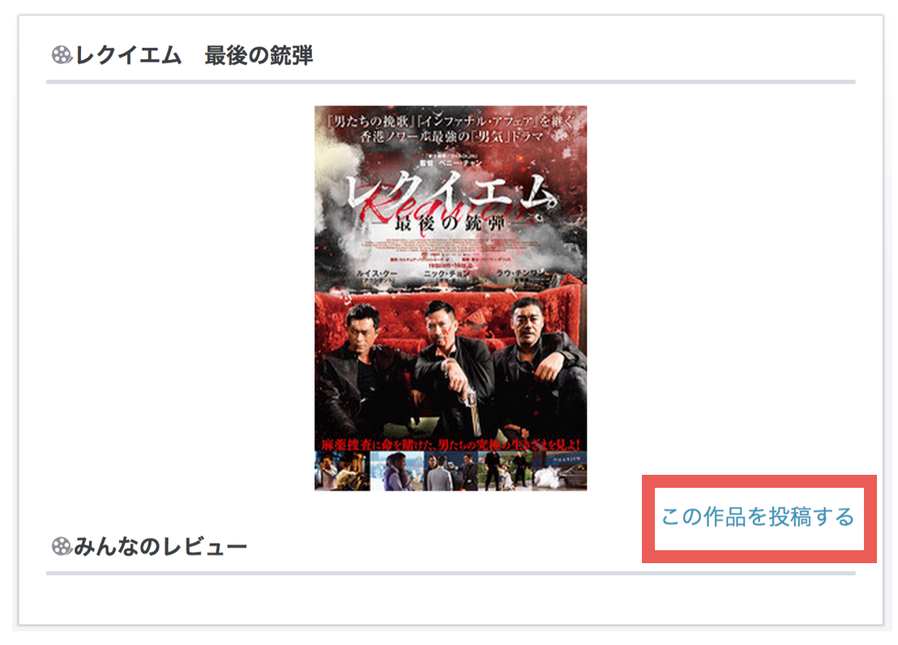
作品ページの右下に「この作品を投稿する」というリンクがあります。いまはクリックしても何も起きないですね。ビューを編集してこのリンクを押すとその作品のレビュー投稿画面に遷移する実装をしましょう。
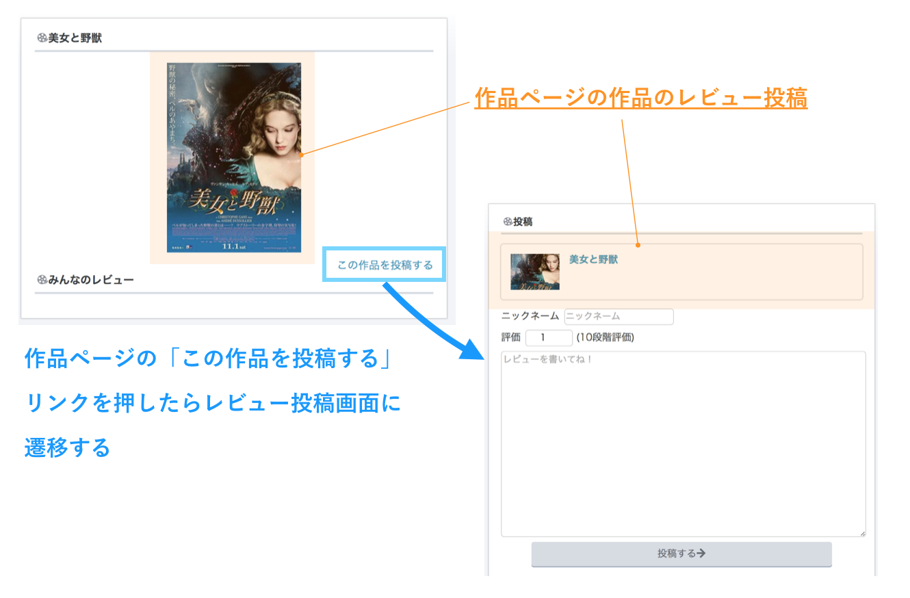
作品ページのビューはproductsコントローラのビューのディレクトリに入っています。
作品ページではproductsコントローラーのshowアクションが呼ばれるのでビューはそれに対応するshow.html.erbです。このファイルを編集してレビュー投稿画面に遷移するようにしましょう。
レビューは書けるようになりましたが、肝心のレビューがどこにも表示されていません。作品ページに移動してみてください。
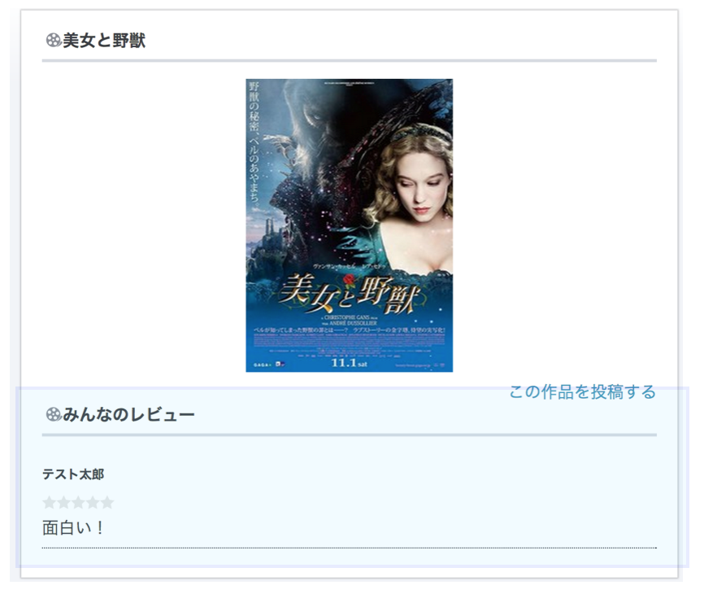
「みんなのレビュー」というところにレビューが表示されていますね。いまはテスト太郎というユーザーが面白い！とレビューしています。これはサンプルのレビューです。ここを本当のレビューを表示させるようにしましょう。
レビューのモデルReviewと作品のモデルProductの間にアソシエーションを設定しましょう。ReviewモデルとProductモデルの間には以下のような関係があります。
① 1つの作品(Productモデル)は複数のレビューを持っている
様々なユーザーが作品についてのレビューを書くため、1つの作品は複数のレビューを持っています。
② 1つのレビュー(Reviewモデル)は1つの作品に属している
レビューはある特定の1つの作品についてのものなので、1つのレビューはただ1つの作品と紐づいています。
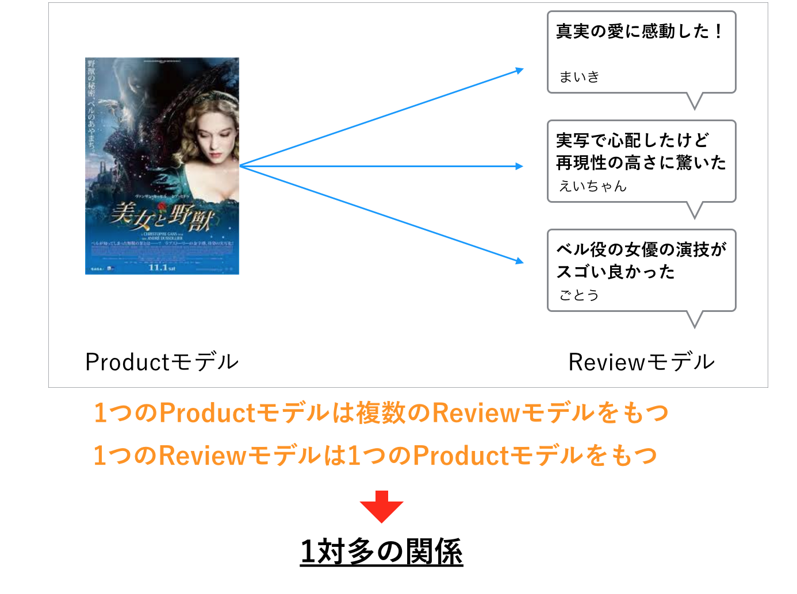
以上より、ProductモデルとReviewモデルの間には1対多の関係があります。
では、この関係をProductモデルとReviewモデルに記述しましょう。アソシエーションの記述はbelongs_toやhas_manyを宣言しました。
これでアソシエーションを宣言できました。rails cで確認してみましょう。
1 |
$ rails c
|
1 2 3 |
review = Review.first # 一番最初のレビューを取得
review.product
=> その作品情報が表示されるか
|
1 2 3 4 |
review = Review.first # 一番最初のレビューを取得
product = review.product # productを変数に入れる
product.reviews
=> その作品のレビューの一覧が表示されるか
|
では、作品ページでレビューの一覧を表示しましょう。今のままではサンプルのレビューが表示された状態です。作品ページのHTMLが書いてあるのはapp/views/products/show.html.erbなのでshow.html.erbを編集しましょう。
erbファイルはHTML内でerb記法を用いることによりRubyを書くことができるのでアソシエーションを使うことができます。show.html.erb内でアソシエーションを使って作品のレビューの一覧を取得し、それらを表示しましょう。
編集できたら、作品のレビューが表示されるか確認してみましょう。
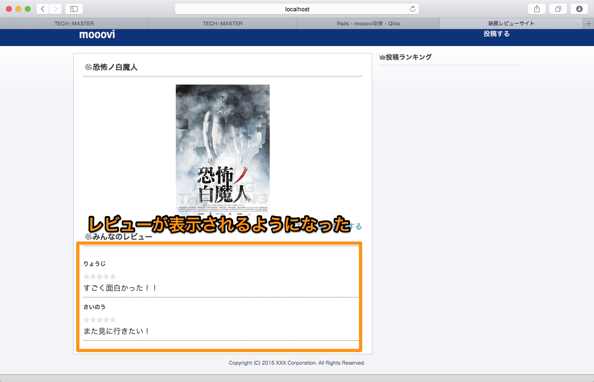
これで基本的な映画レビューアプリケーションの機能は完成しました。次の章で応用の機能(ランキングなど)を実装していきましょう。
お疲れ様でした！このカリキュラムの終わりに確認問題を解きましょう。